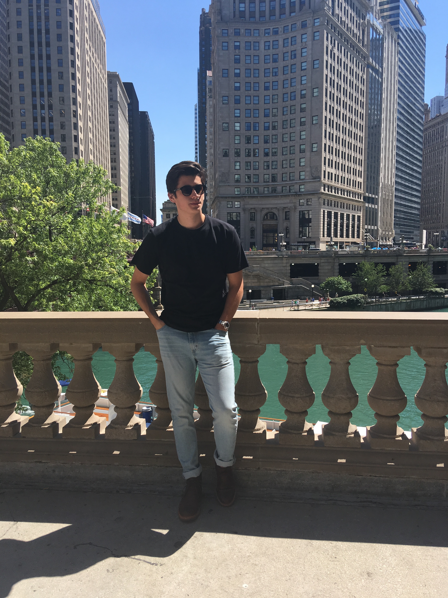

Hi, my name is Jules!
 I am currently a Junior at the University of Wisconsin-Madison and I am studying computer science and working towards earning a leadership certificate. I take pride in working hard and I love challenging myself in-order to constantly achieve higher. When I am not at school or working I enjoy running. I plan on running a marathon by the end of 2022. I also enjoy reading. In the past year I have found myself reading a lot of philosophy, as I enjoy creative and out the box thinking. Another hobby of mine is art I enjoy keeping a sketch book which helps me clear my mind and express some creative energy. In my free time I also like to do some coding... I like to dive into projects that I find interesting and learn on the fly what is necessary to complete the project. My interest in computer science are in web and mobile development and artificial intelligence. Essentially all the components necessary to make a fully functional "smart" user products. I recently launched my first iOS app called Paddle Wall and I am currently working on updates and new features for the app.